Sesión 4 de ejercicios EJB - Conexión con BD de un EJB con estado
En esta sesión de ejercicios vamos a crear un enterprise bean con estado que implemente un business object remoto que usa un DAO. El estado del bean nos va a servir para mantener en una variable el DAO y no tener que crearlo cada vez que se abre una sesión. Como ejemplo vamos a usar un DAO del proyecto de integración: el DAO Usuario.
Partimos del proyecto común en el que se define el DAO. También, para ahorrar tiempo, entregamos un proyecto que implementa una conexión remota al EJB y un conjunto de pruebas JUnit que testean el EJB.
En resumen, los pasos a seguir son los siguientes:
- Configuración del espacio de trabajo inicial
- Creación del EAR en el que se va a incluir el DAO y el bean
- Creación del enterprise bean
- Despliegue del EAR en el servidor de aplicaciones
- Creación de la fuente de datos en el servidor de aplicaciones
- Comprobación del funcionamiento remoto
Configuración del espacio de trabajo inicial
1. Descarga el ZIP con los proyectos de esta sesión de ejercicios. En él se encuentran los proyectos ejb-usuario-comun (contiene el DAO Usuario) y ejb-usuario-cliente que contiene el cliente remoto y las pruebas JUnit que haremos con el EJB.
Como referencia, para comprobar qué métodos debemos crear en el enterprise bean, listamos a continuación ambos clientes.
ClienteUsuario.java
package es.ua.jtech.ejb.clientes;
import java.io.IOException;
import java.util.Properties;
import javax.naming.Context;
import javax.naming.InitialContext;
import javax.rmi.PortableRemoteObject;
import es.ua.jtech.ejb.beans.Usuario;
import es.ua.jtech.ejb.beans.UsuarioHome;
import es.ua.jtech.proyint.to.UsuarioTO;
public class ClienteUsuario {
public static void main(String[] args) {
try {
Context jndiContext = getInitialContext();
Object obj = jndiContext.lookup("UsuarioBean");
UsuarioHome home = (UsuarioHome) narrow(obj, UsuarioHome.class);
obj = home.create();
Usuario usuario = (Usuario) narrow(obj, Usuario.class);
System.out.println("Voy a crear el usuario domingo");
UsuarioTO usuarioTO = new UsuarioTO("domingo","gallardo",
"Domingo","Gallardo","López");
usuario.addUsuario(usuarioTO);
System.out.println("Voy a buscar el usuario domingo");
usuarioTO = usuario.selectUsuario("domingo");
if (usuarioTO != null) {
System.out.println("Usuario domingo encontrado");
System.out.println("Contraseña: " + usuarioTO.getPassword());
System.out.println("Nombre completo: " + usuarioTO.getNombre() + " " +
usuarioTO.getApellido1() + " " +
usuarioTO.getApellido2());
}
else {
System.out.println("Usuario no encontrado");
}
System.out.println("Voy a borrar el usuario domingo");
usuario.deleteUsuario("domingo");
System.out.println("Voy a buscar el usuario domingo");
usuarioTO = usuario.selectUsuario("domingo");
if (usuarioTO != null) {
System.out.println("Usuario domingo encontrado");
System.out.println("Contraseña: " + usuarioTO.getPassword());
System.out.println("Nombre completo: " + usuarioTO.getNombre() + " " +
usuarioTO.getApellido1() + " " +
usuarioTO.getApellido2());
}
else {
System.out.println("Usuario no encontrado");
}
System.out.println("Adios");
} catch (Exception e) {
e.printStackTrace();
}
}
private static Context getInitialContext()
throws javax.naming.NamingException, IOException {
Properties p = new Properties();
p.put(Context.INITIAL_CONTEXT_FACTORY,
"weblogic.jndi.WLInitialContextFactory");
p.put(Context.PROVIDER_URL, "t3://localhost:7001");
return new InitialContext(p);
}
private static Object narrow(Object obj, Class clase) {
return PortableRemoteObject.narrow(obj, clase);
}
}
TestUsuario.java:
package es.ua.jtech.ejb.tests;
import java.io.IOException;
import java.util.Properties;
import javax.naming.Context;
import javax.naming.InitialContext;
import javax.rmi.PortableRemoteObject;
import es.ua.jtech.ejb.beans.Usuario;
import es.ua.jtech.ejb.beans.UsuarioHome;
import es.ua.jtech.proyint.to.UsuarioTO;
import junit.framework.TestCase;
public class TestUsuario extends TestCase {
private static Usuario usuario;
public TestUsuario (String nombre) {
super(nombre);
}
public void testCreateUsuario() {
try {
Context jndiContext = getInitialContext();
Object obj = jndiContext.lookup("UsuarioBean");
UsuarioHome home = (UsuarioHome) narrow(obj, UsuarioHome.class);
obj = home.create();
usuario = (Usuario) narrow(obj, Usuario.class);
} catch (Exception e) {
fail("Fallo en la creación");
}
}
public void testAddUsuario() {
try {
UsuarioTO usuarioTO = new UsuarioTO("domingo","gallardo",
"Domingo","Gallardo","López");
usuario.addUsuario(usuarioTO);
} catch (Exception e) {
fail("Fallo añadiendo usuario");
}
}
public void testSelectUsuario() {
try {
UsuarioTO usuarioTO = usuario.selectUsuario("domingo");
assertTrue(usuarioTO != null);
} catch (Exception e) {
fail("Fallo seleccionando usuario");
}
}
public void testDeleteUsuario() {
try {
int numBorrados = usuario.deleteUsuario("domingo");
assertTrue(numBorrados == 1);
} catch (Exception e) {
fail("Fallo borrando usuario");
}
}
private static Context getInitialContext()
throws javax.naming.NamingException, IOException {
Properties p = new Properties();
p.put(Context.INITIAL_CONTEXT_FACTORY,
"weblogic.jndi.WLInitialContextFactory");
p.put(Context.PROVIDER_URL, "t3://localhost:7001");
return new InitialContext(p);
}
private static Object narrow(Object obj, Class clase) {
return PortableRemoteObject.narrow(obj, clase);
}
}
Hay que hacer notar que el bean va a ofrecer los servicios determinados por sus métodos remotos: addUsuario, selectUsuario y deleteUsuario. En este caso son los mismos métodos que el DAO, pero normalmente el bean proporciona una lógica de negocio adicional (lo veremos en el proyecto de integración).
2. Importa los proyectos en tu espacio de trabajo Workshop.
3. Crea la base de datos ejb y carga sus datos. Para ello, muestra la vista de Ant y añade el buildfile que hay en el directorio bd. Ejecuta las tareas initDB y dataDB para crear la base de datos y la tabla USUARIOS. La configuración del espacio de trabajo se muestra en la siguiente imagen:
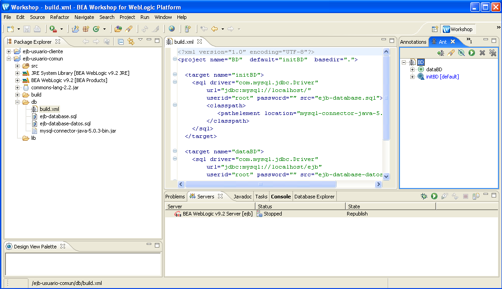
Creación del EAR
1. Utiliza el asistente para crear el EAR ejb-usuarioEAR. Incluye en él el proyecto ejb-usuario-comun.
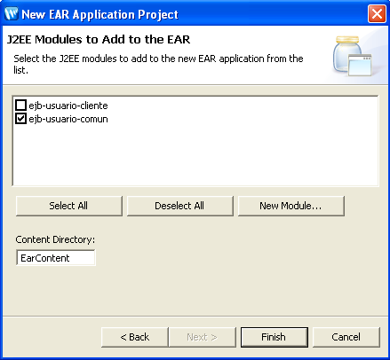
Creación del proyecto EJB y del enterprise bean
1. Utiliza el asistente para crear el proyecto Weblogic EJB ejb-usuario, añadiéndolo al EAR.
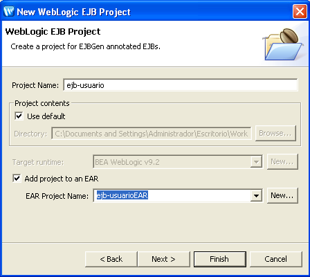
2. Modifica las dependencias del proyecto recién creado para incluir la librería ejb-usuario-comun.jar correspondiente al proyecto ejb-usuario-comun en el que se define el DAO.
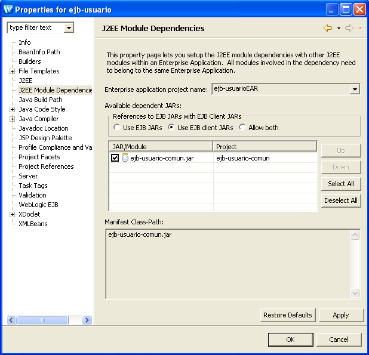
3. Crea en el proyecto bean el paquete es.ua.jtech.ejb.beans.
4. Crea en ese paquete el WebLogic Session Bean UsuarioBean usando el asistente correspondiente.
5. Cambia el nombre remoto JNDI del bean a UsuarioBean y los nombres de las clases remotas a Usuario y UsuarioHome:
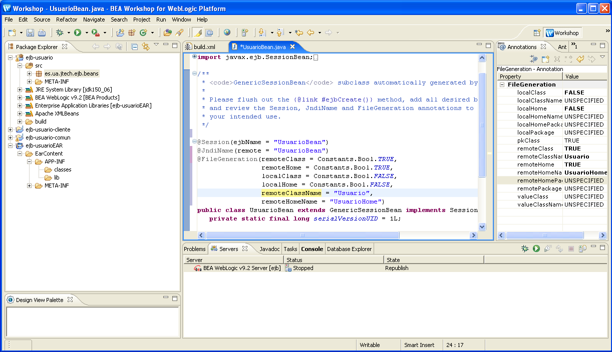
6. Define la variables estática que va a contener el DAO:
private static IUsuario usuarioDAO;
7. Añade en el método de creación del bean el código necesario para que el bean obtenga un usuarioDAO y lo guarde en la variable estática
8. Añade los métodos de negocio y completa el código (escribimos el código de uno de ellos como ejemplo):
@RemoteMethod()
public UsuarioTO selectUsuario(String nombre) {
UsuarioTO usuario = null;
try {
usuario = usuarioDAO.selectUsuario(nombre);
} catch (DAOException e) {
e.printStackTrace();
}
return usuario;
}
@RemoteMethod()
public void addUsuario(UsuarioTO usuarioTO) {...}
@RemoteMethod()
public int deleteUsuario(String nombre) {...}
9. Define en las propiedades del EJB el nombre del client jar a crear: ejb-usuario-clientjar.jar.
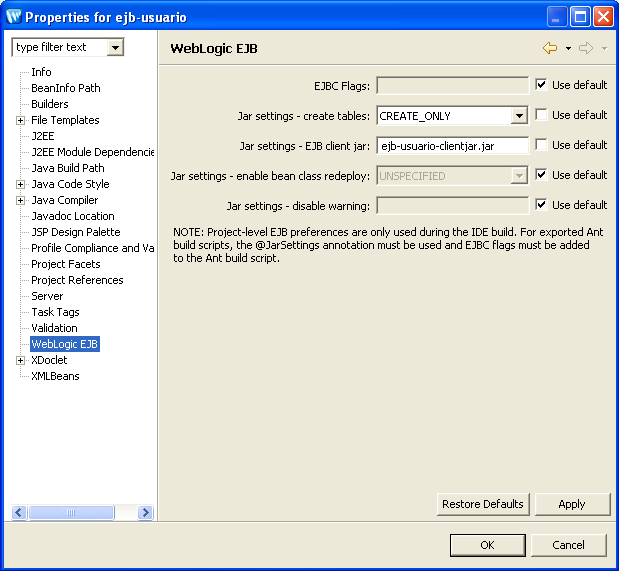
Despliegue del EAR
1. Pon en marcha el servidor de aplicaciones y despliega el EAR en él:
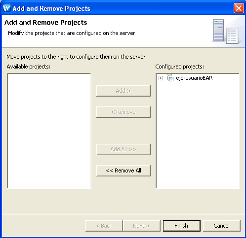
2. Añade el ejbjar al cliente y reconstruye el proyecto.
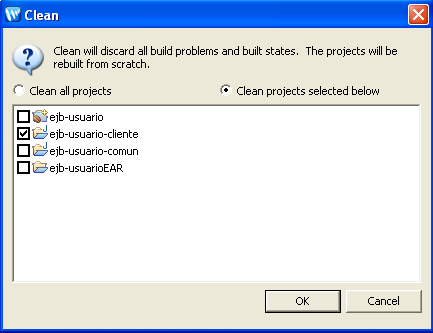
3. Prueba el cliente ClienteUsuario.java, verás que no funciona porque falta por añadir la fuente de datos al servidor de aplicaciones.
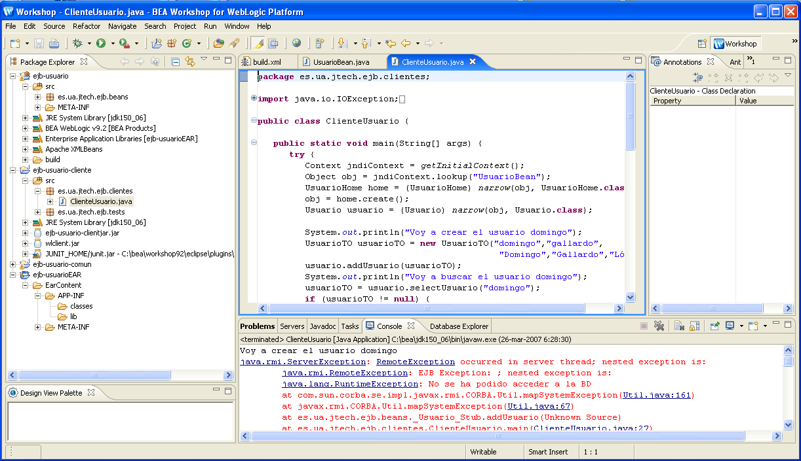
Creación de la fuente de datos
1. Crea con la consola de administración la fuente de datos "ejbDS" con la BD "ejb":
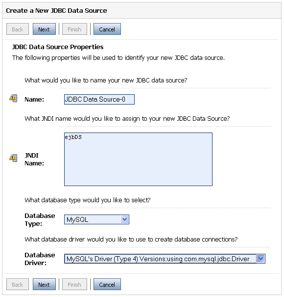
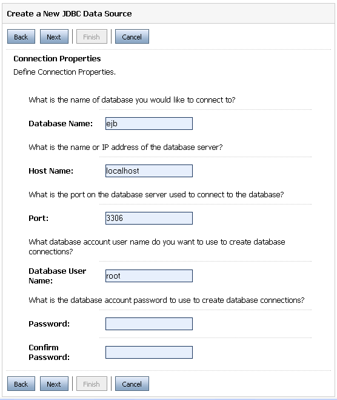
2. Prueba que funciona la conexión:
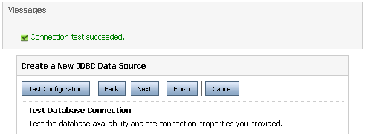
3. Áñadela al servidor de aplicaciones y activa los cambios:
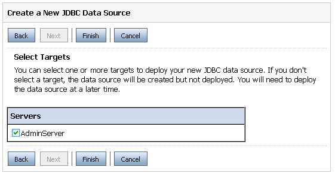
Comprobación del funcionamiento remoto
1. Vuelve a probar el cliente y las pruebas JUnit. ¡Ahora ya funcionan!:
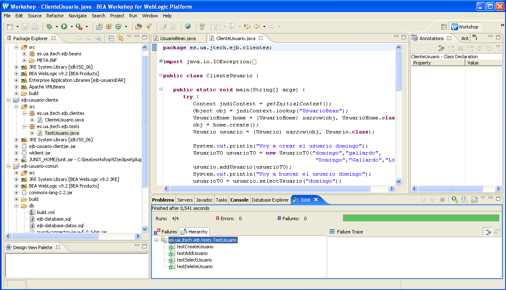